Tutorial: How to generate and edit blots in Iconoplasm
This tutorial walks through the steps to request a new character portrait (“blot”) for a gene on Iconoplasm.
It’s written for people unfamiliar with how image generation services work. It will take around 10 minutes of your time.
Prerequisites:
- An email account
- Bank card with $5 on it
1. Log in to brinedew.bio site with your Discord account
- Go to iconoplasm.brinedew.bio.
- In the right sidebar, click Discord Login.
- On the Discord authorize page, click Authorize.
You are now redirected back as an authenticated user (your Discord nickname appears in the sidebar).
2. Get an API key from a provider
Iconoplasm redirects generation requests to a third party image generation service (API provider). Registering with the provider is free: the provider will only charge you around 1 to 10 cents per image when you actually start sending image generation requests.
In this section, we will walk through the steps needed to register with a provider and obtain a key you will need for image generation.
You only need to register with one of supported providers:
- Gemini API
- Krea API
- Luma Uni API
- OpenAI API
Your choice of provider might depend on your preferred payment model, discount offers, or aesthetic taste. There are no wrong choices. If you’re unsure, visit brinedew.bio Discord server to ask for user opinions.
Below are the registration instructions for each provider.
2a. Gemini API
Getting the key:
- Go to aistudio.google.com/apikey.
- Sign in with your Google account.
- Accept the terms of service if prompted.
- Click Create API key in the top right menu.
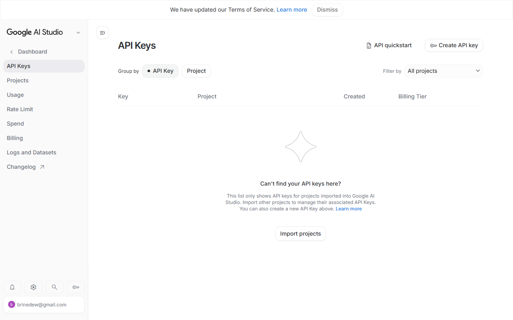
- In the Create a new key dialog, give your key a name (e.g. “Iconoplasm”) and pick a project.
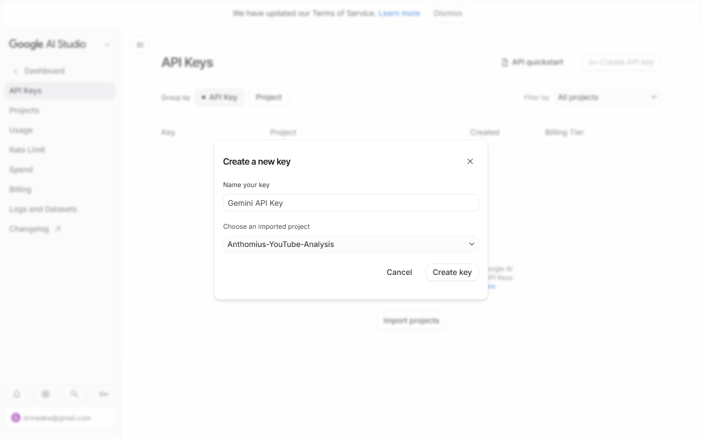
- Click Create key.
- The key appears in your API Keys table. Copy it immediately.
Adding funds.
Gemini API has a Free tier with generous rate limits that works immediately after creating your key — no credit card required.
For higher rate limits, advanced features, or paid models like Gemini 3 Pro Image Preview:
- In the AI Studio sidebar, click Billing.
- Click Set up billing — this links your Google Cloud billing account.
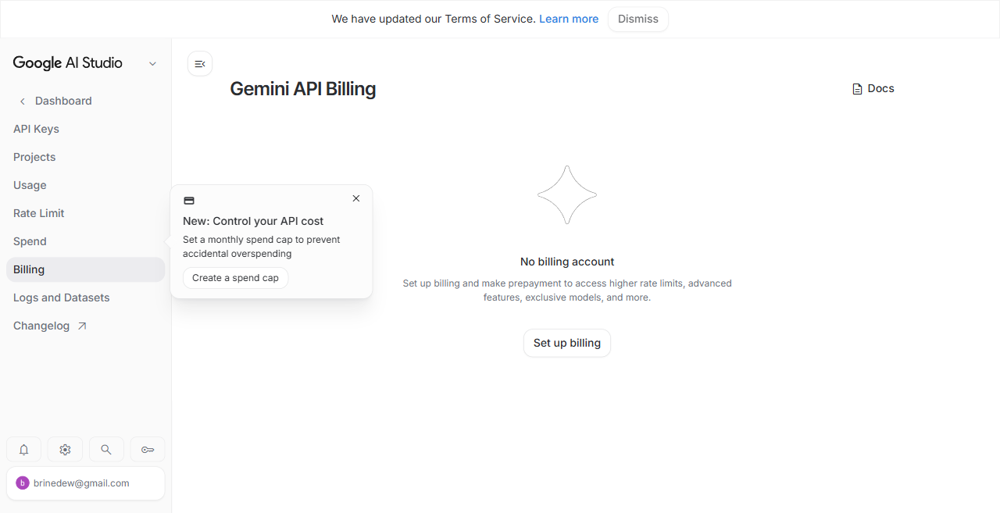
2b. Krea API
Getting the key:
- Go to krea.ai.
- Click Log in at the top right.
- Enter your email address and click Continue with Email.
- A Password field appears. Enter your Krea password and click Log in.
- After logging in, go to the API Tokens page.
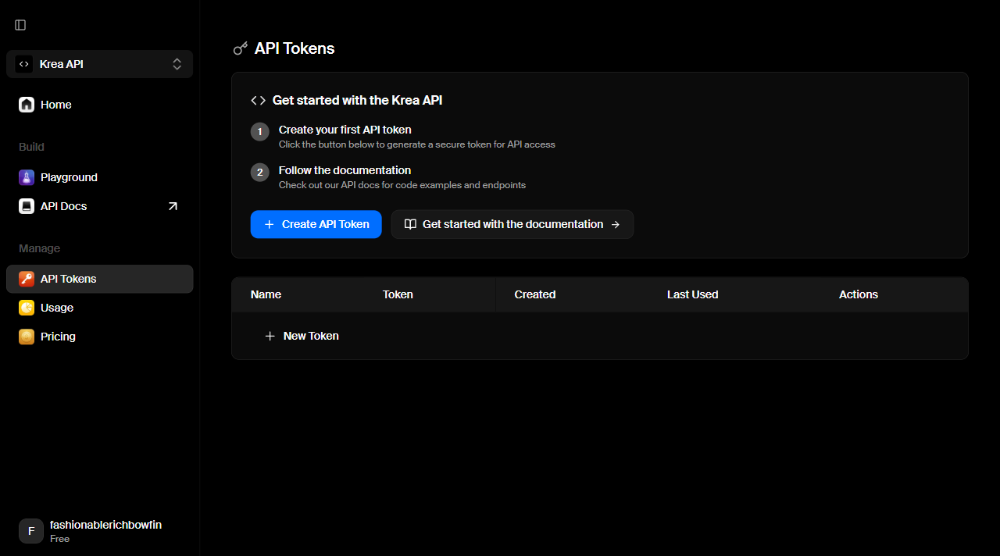
- On the API Tokens page, click Create API Token.
- In the Create a New Key dialog that appears, give your key a name (e.g. “Iconoplasm”) in the text field.
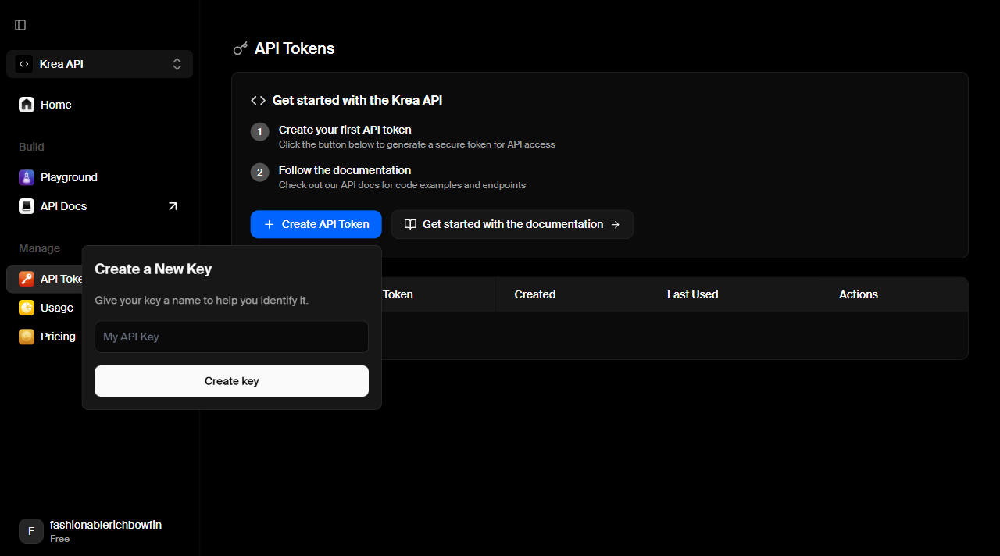
- Click Create key.
- A Key Created Successfully dialog shows the key once. Click Copy to clipboard or Copy & Close — you can’t see it again.
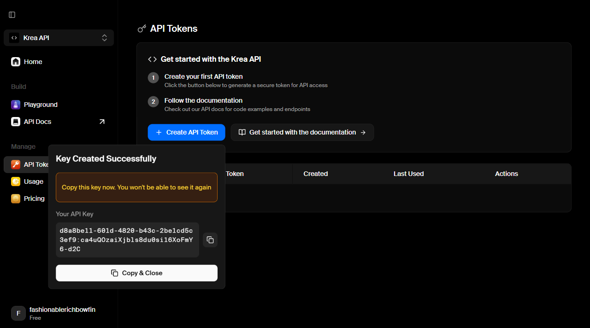
Adding funds:
- Go to the Krea API Home page.
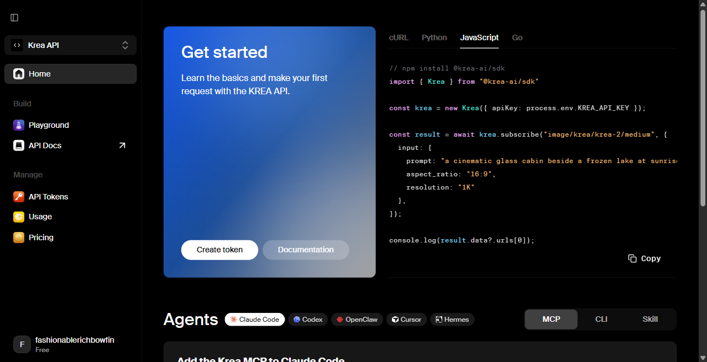
- Scroll down to the Agents section
- Select a top-up amount: 5.00).
- Click Add button below — this opens a Stripe Checkout. Balance applies immediately on success.
When your balance runs out, new requests will get an error message.
2c. Luma Uni API
Getting the key:
- Go to platform.lumalabs.ai.
- Click Sign in at the top right (or Sign up if you don’t have an account).
- Sign in with your email address. If you don’t have an account, enter your email and click Continue, then set a password.
- Once logged in, you’ll see the Luma API Console dashboard.
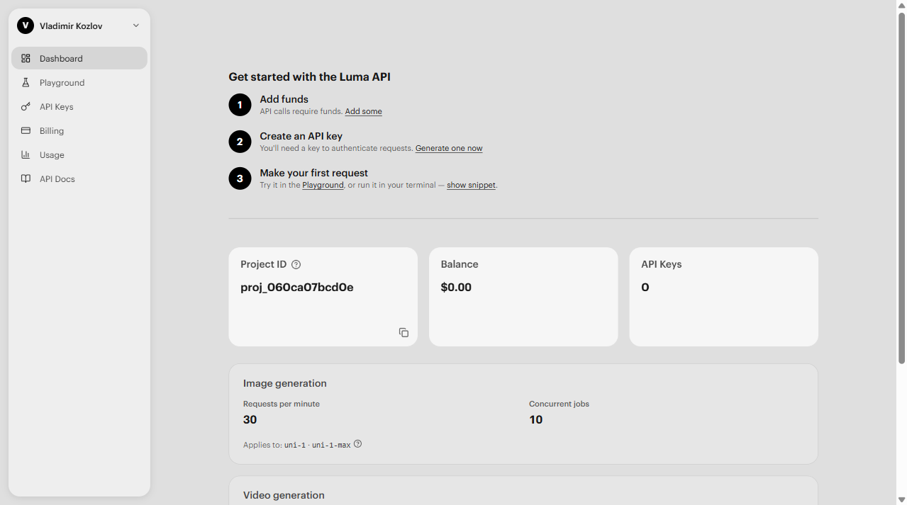
- In the left sidebar, click API Keys.
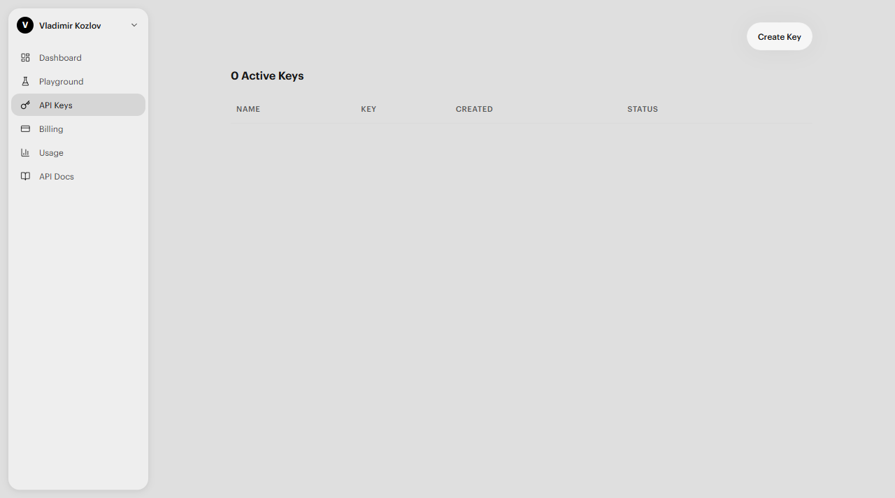
- On the API Keys page, click Create Key.
- In the Create API Key dialog, give your key a name (e.g. “Iconoplasm”) in the text field.
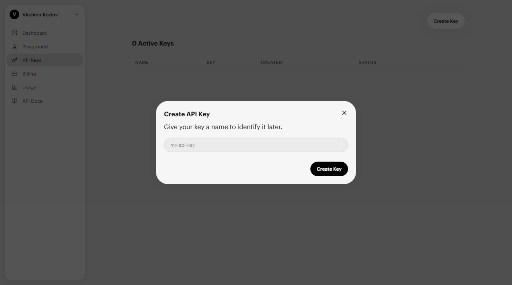
- Click Create Key. The key appears in your API Keys table. Copy it immediately — you won’t be able to see it again.
Adding funds:
You must add a card and top up your balance before making requests to Luma API.
- In the left sidebar, click Billing.
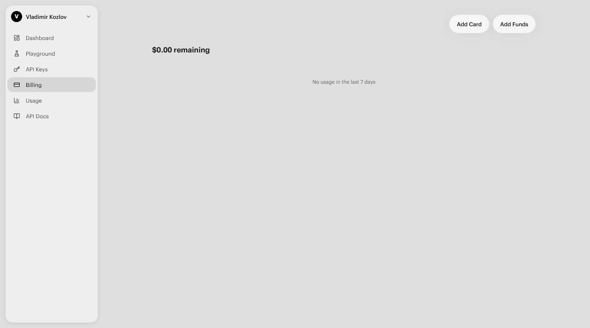
- Click Add Card to save a payment method.
- Click Add Funds to top up your balance. Enter the amount you want to add and complete the payment.
- Your balance updates immediately on success. Each image generation deducts from this balance — estimated costs are shown in the Pricing table below.
2d. OpenAI API
Getting the key:
- Go to platform.openai.com and click Sign up or Log in.
- Enter your email address and click Continue. OpenAI sends a 6-digit verification code to your inbox.
- Check your email, enter the code, and click Continue.
- Once logged in, go to API Keys.
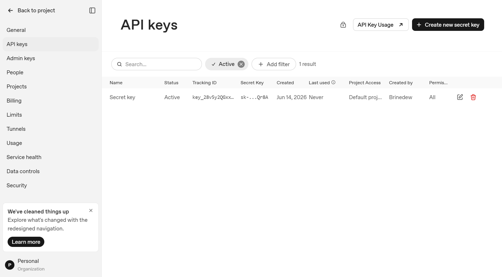
- Click Create new secret key button at the top right.
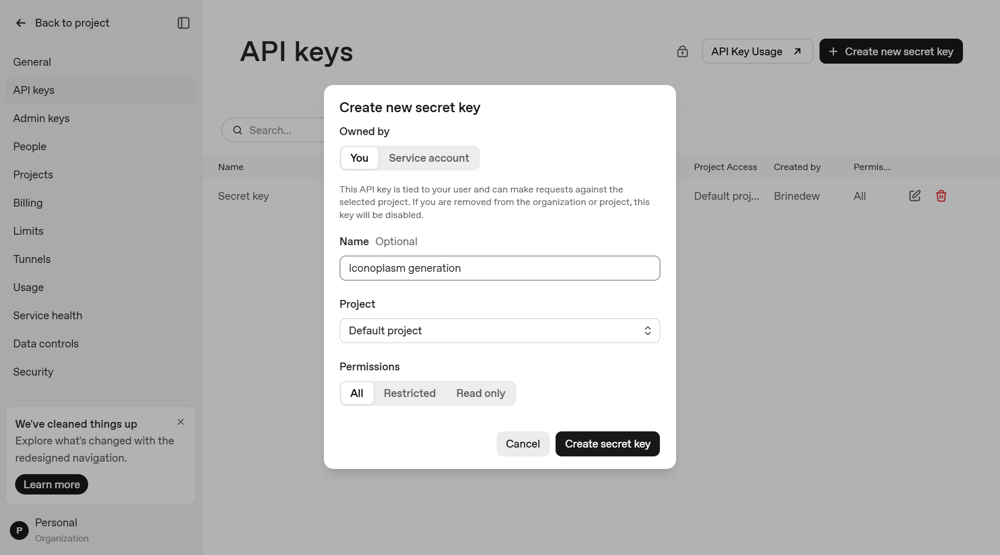
- In the dialog:
- Name: Give your key a label (e.g. “Iconoplasm generation”)
- Permissions: Keep All selected
- Project: Keep Default project
- Click Create secret key.
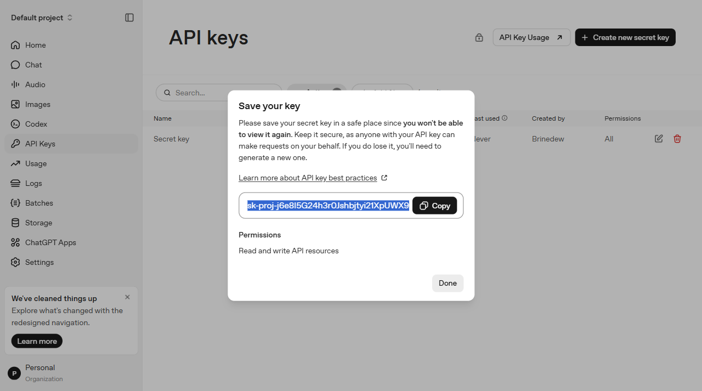
8. A Save your key dialog appears showing the key once. Copy it now — you can’t see it again.
Adding funds:
GPT Image 2 has no free tier. Without billing, Iconoplasm shows: “Billing hard limit has been reached.” You need a credit card on file. OpenAI bills you monthly for what you use.
-
Go to Billing overview.
-
Click Add payment details.
-
A Stripe credit card form opens. Enter your card number, expiration date (MM/YY), and CVC code.
-
Click Continue. Your card is saved. You’re billed monthly for actual usage.
3. Configure your API key in Iconoplasm
Now that you have a key from one of the providers above, save it in Iconoplasm settings. The steps are the same regardless of which provider you chose.
- Go to Brinedew.bio user settings by clicking the gear icon in the right sidebar.
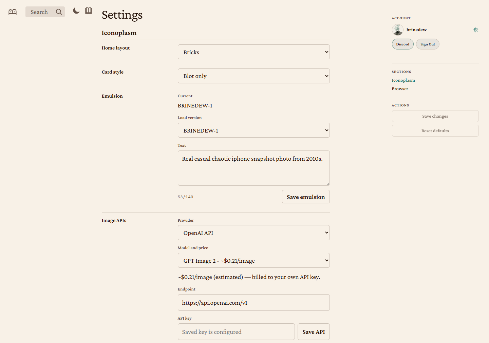
- Under Image APIs, set Provider to your chosen provider (OpenAI API, Krea API, Gemini API, or Luma Uni API).
- Paste the key you copied from your provider into the API key field.
- Select a Model using the dropdown menu. There’s no wrong choice, experiment and see which model matches your taste. High quality models are usually more expensive.
- Click Save API.
4. Configure your emulsion
The emulsion is a short text prompt (max 140 characters) that sets the visual style and atmosphere for every blot you generate.
- On the same Settings page, under Iconoplasm → Emulsion, find the Text field.
- Enter a description of the rendering style you want for the new images you request — for example: “Real casual chaotic iphone snapshot photo from 2010s.”
- Click Save emulsion.
Your saved emulsion appears in the Load version dropdown. You can maintain multiple drafts.
5. Navigate to a gene page
- Go to iconoplasm.brinedew.bio.
- Search for a gene by symbol or name, or browse the archive.
- Click a gene card, or go directly to
/gene/SYMBOL(e.g. iconoplasm.brinedew.bio/gene/INS).
6. Generate a new candidate blot
- Under the canonical blot, click New candidate button in the bottom right.
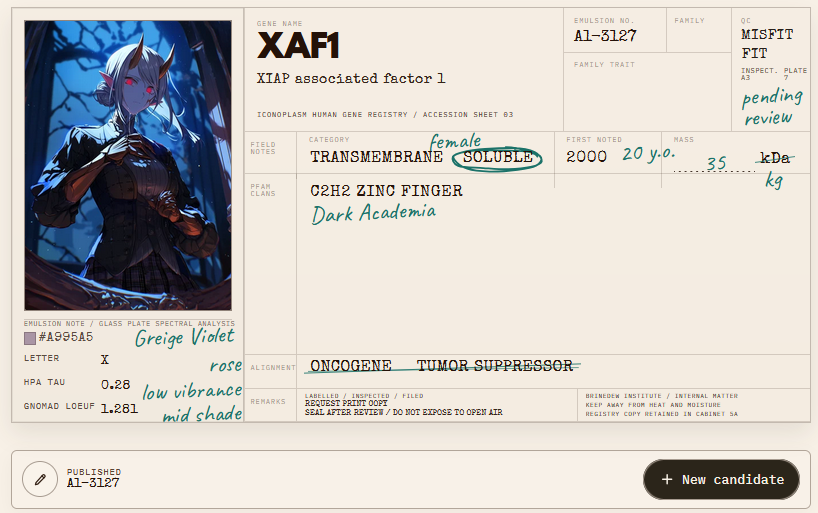
- You will see a menu for requesting a new candidate:
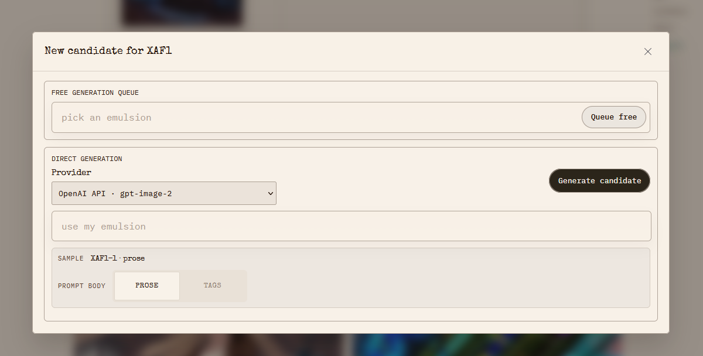
- The Provider selector should show your newly added provider (e.g. OpenAI API · gpt-image-2).
- Keep the “emulsion” field empty, or click it to select the emulsion you saved in the user settings.
- Keep “Prose” to send the gene sample to the model as a prose prompt. If your image model works best with a tag cloud prompt, switch the selector to “Tags”.
- Click Generate candidate button.
- Wait 1-2 minutes for the new image to appear in the same dialog box.
- Click Publish candidate to add the new image to the gene’s candidate list.
If your provider requires billing that hasn’t been set up yet, the dialog will show: “Billing hard limit has been reached.”
7. Edit an existing candidate blot
- Click the Edit blot pencil icon under the canonical blot or under any candidate blot.
- The edit dialog will open, showing what characteristics you can request to edit.
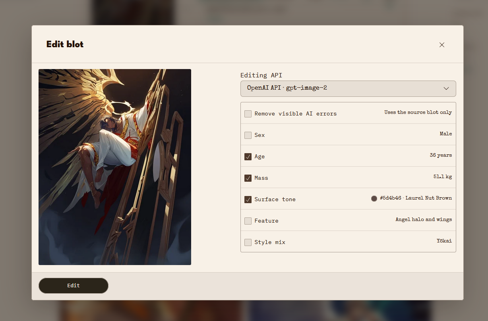
- Set checkmarks in the fields you want to edit. E.g. if the character looks bright green, but the “Surface tone” is dark, tap the “Surface tone” checkmark. You can set multiple checkmarks at once.
- Click Edit to request an edited blot.
- Wait 1-2 minutes for the new image to appear in the same dialog box. Drag the before/after slider to judge the results.
- Click Publish to add the new image to the gene’s candidate list.
8. Vote on candidates
- Click the checkmark (Approve blot) to upvote a candidate.
- Click the X (Reject blot) to downvote it.
- The canonical blot is the one with the highest approval score.
Pricing
Each provider sets its own rates. Iconoplasm’s dropdown shows rough estimates — always check the official pricing page before generating at scale.
| Iconoplasm provider | Models in dropdown | Per-image estimate (dropdown) | Official pricing page |
|---|---|---|---|
| Krea API | Flux, Seedream 4, Krea 2 Large, GPT Image 2, Nano Banana Pro | ~0.16 | krea.ai/features/api |
| Gemini API | 3.1 Flash Image, 3 Pro Image | ~0.134 | ai.google.dev/gemini-api/docs/pricing |
| Luma Uni API | Uni 1.1, Uni 1.1 Max | 0.103 | lumalabs.ai/pricing |
| OpenAI API | GPT Image 2 | ~$0.21 | openai.com/api/pricing |
All costs are billed directly by the provider, not by Iconoplasm.